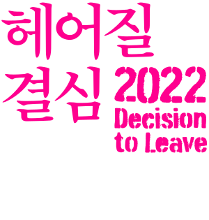
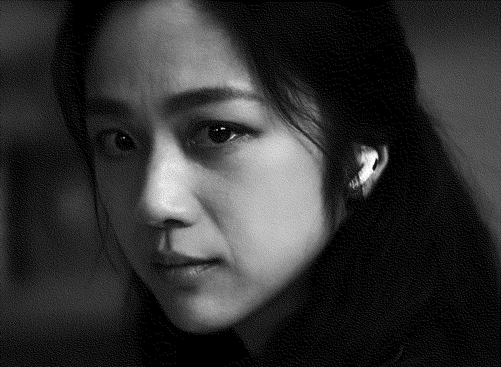
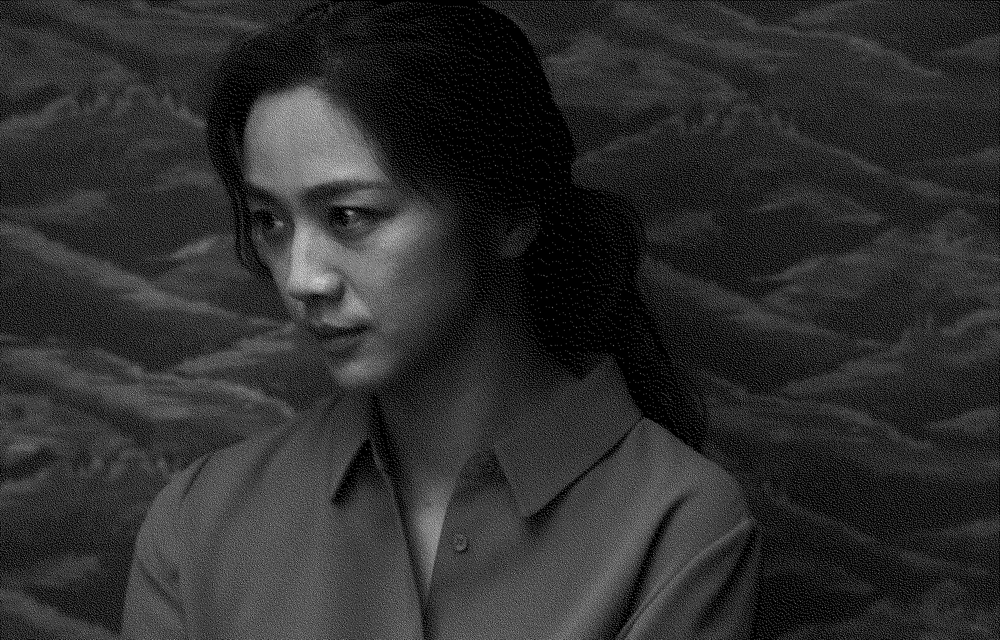
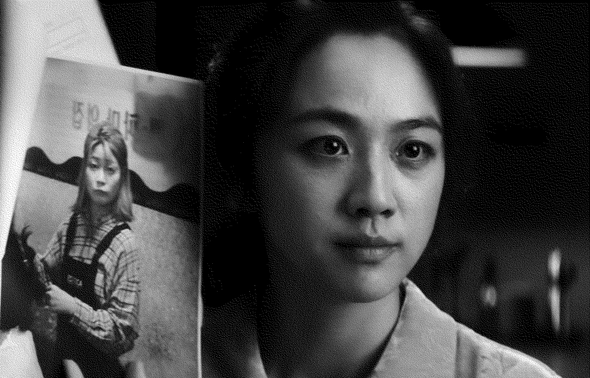
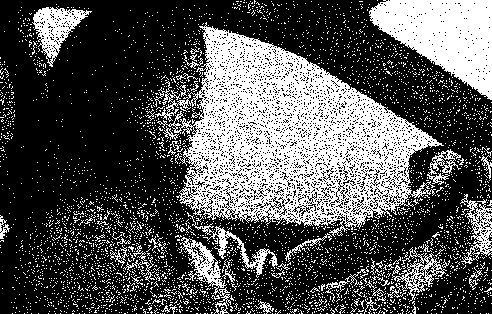

송서래
복수자
헤어질 결심
Decision To Leave
2022년
감독 박찬욱
멜로/서스펜스
138분
송서래 역
탕웨이


송서래의 첫 번째 대사
기도수 씨 아내 송서래입니다. 중국인이라 한국말이 부족합니다.
00:06:33



송서래의 마지막 대사
난 해준 씨의 미결 사건이 되고 싶어서 이포에 갔나 봐요. 벽에 내 사진 붙여놓고, 잠도 못 자고 오로지 내 생각만 해요.
02:07:30